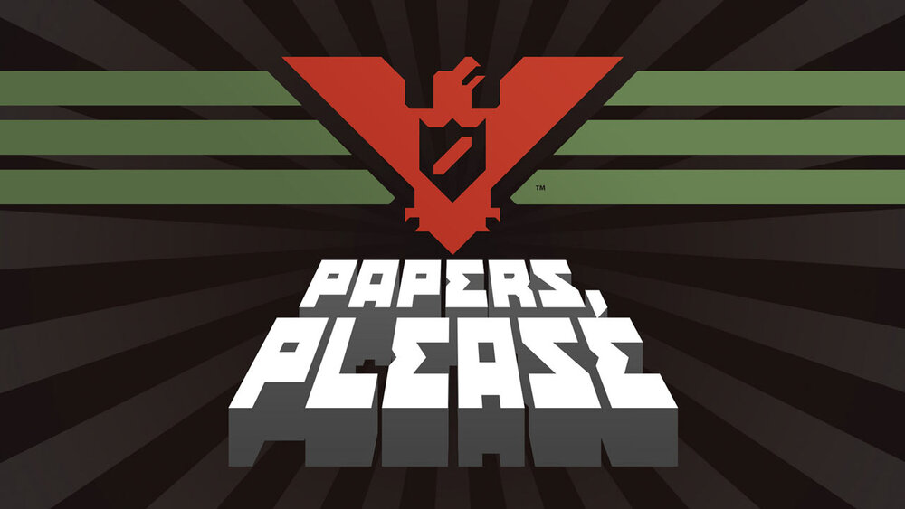
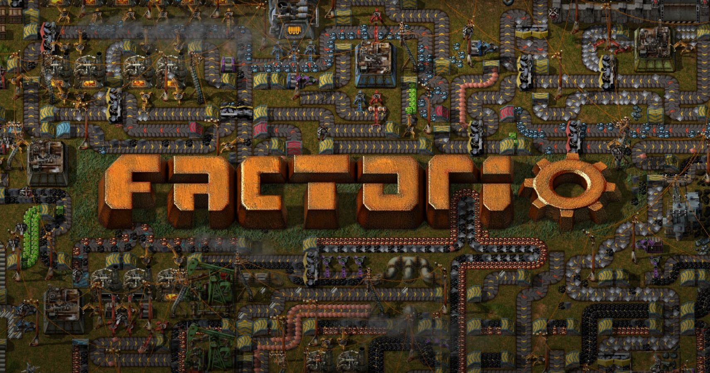
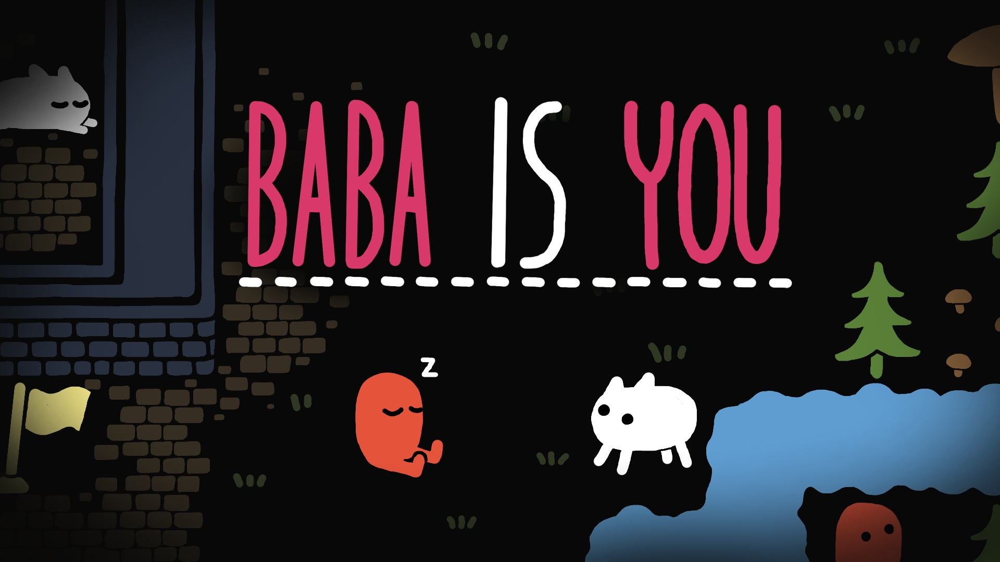

Click Me!!!!
The communist country of Arstotzka has ended a 6-year war with neighboring Kolechia and reclaimed its rightful half of the border town, Grestin. Your job as an immigration inspector is to control the flow of people entering the Arstotzkan side of Grestin from Kolechia. Among the throngs of immigrants, visitors and people looking for work are hidden smugglers, spies and terrorists. Using only the documents provided by travelers and the Ministry of Admission's primitive inspect, search and fingerprint systems you must decide who can enter Arstotzka, who will be turned away and who will be arrested.
Hover!!!
Factorio is a game in which you build and maintain factories. You will be mining resources, researching technologies, building infrastructure, automating production and fighting enemies. In the beginning you will find yourself chopping trees, mining ores and crafting mechanical arms and transport belts by hand, but in short time you can become an industrial powerhouse, with huge solar fields, oil refining and cracking, manufacture and deployment of construction and logistic robots, all for your resource needs. However this heavy exploitation of the planet's resources does not sit nicely with the locals, so you will have to be prepared to defend yourself and your machine empire. Join forces with other players in cooperative Multiplayer, create huge factories, collaborate and delegate tasks between you and your friends. Add mods to increase your enjoyment, from small tweak and helper mods to complete game overhauls, Factorio's ground-up Modding support has allowed content creators from around the world to design interesting and innovative features. While the core gameplay is in the form of the freeplay scenario, there are a range of interesting challenges in the form of the Scenario pack, available as free DLC. If you don't find any maps or scenarios you enjoy, you can create your own with the in-game Map Editor, place down entities, enemies, and terrain in any way you like, and even add your own custom script to make for interesting gameplay.
Press the Spacebar!!!
Baba Is You is an award-winning puzzle game where you can change the rules by which you play. In every level, the rules themselves are present as blocks you can interact with; by manipulating them, you can change how the level works and cause surprising, unexpected interactions! With some simple block-pushing you can turn yourself into a rock, turn patches of grass into dangerously hot obstacles, and even change the goal you need to reach to something entirely different.